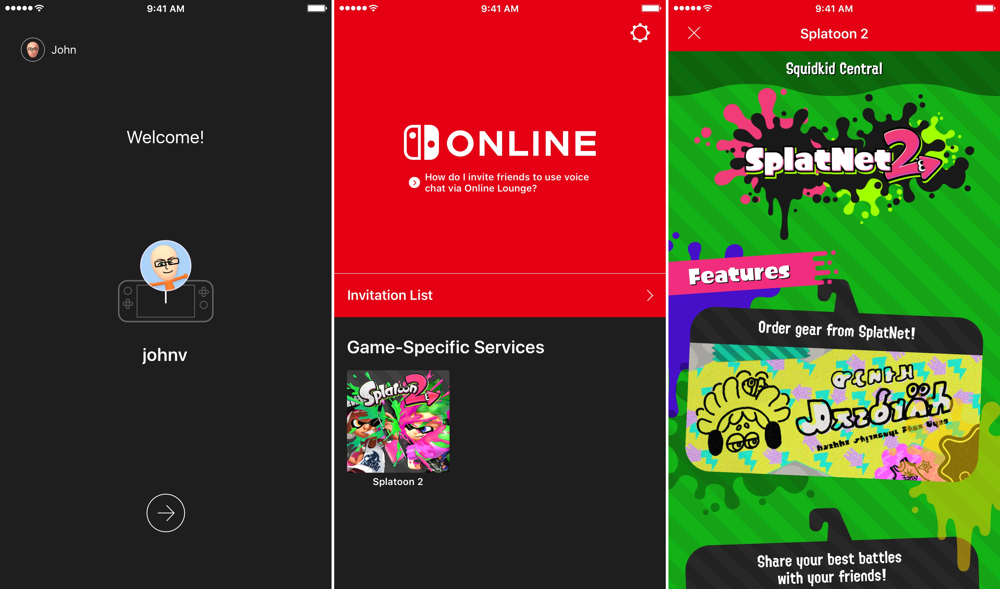

Overview
Problem
Nintendo Switch Online players have no reason to use the Nintendo Online App due to its lack of substance. The Nintendo Online App fails to provide customization, social interactivity, and an intuitive voice chat system. Players would often opt for better third party text and voice systems for their gaming.

Solution
I redesigned the voice chat by making it more accessible and intuitive to use. Also, I developed social infrastructure within the app to provide players with a sense of community within the Nintendo ecosystem by implementing the following features: an activity feed, groups, friends, and profiles. With new features and a fresh interface, Nintendo gamers would have the opportunity to form communities online.
Timeline
1 Month during September 2020
Project Info
Individual Design Exercise
Tools
Adobe XD, Qualtrics, Google Docs
Research
Why Redesign Nintendo Online App?
As an avid video gamer, I was excited when I first got my Nintendo Switch. I was looking forward to playing popular multiplayer titles sitting side by side with my friends. Due to the pandemic compromising this interaction, I bought a Nintendo Switch Online subscription so that I would be able to play these games with my friends while we were all quarantined. To take advantage of all the features of this subscription, I downloaded the Nintendo Online iOS App to be able to interact with my friends.
As an aspiring designer, I noticed that the Nintendo Online iOS app simply felt lackluster and left more to be desired. The only avenue for online interaction with my friends was to use voice chat, which was confusing to set up and use. I immediately thought: “why would anyone use this app for voice chat when there’s better apps that serve the same purpose?” A potential answer for this question was that people want the convenience of interacting with their friends within the Nintendo ecosystem. This could be linked to the only other feature on this app, which was “Game-Specific Services”.
Therefore, this gave me the idea: what if we can redesign the app’s user experience so that online social interactions within the Nintendo Switch ecosystem are easier, intuitive, and enjoyable.
To incorporate best design practices, I conducted user research to find out if this problem was widespread enough and worth solving.
Comparative Analysis
I first conducted a comparative analysis on similar online apps for competitor platforms. I examined Playstation, Xbox, and Discord:

After conducting this comparative analysis, I noticed why I felt like this application was lackluster: it simply doesn’t facilitate enough social interaction. Because Nintendo’s app has limited features as compared to its competitor’s, I can draw inspiration from each competitor’s frameworks and improve upon Nintendo’s app by adding easy to use social features that would foster greater user experience. These features jumped out to me the most: player profiles, friends, both text and voice chat, activity feed
User Surveys
Though the Comparative Analysis gave some good insight, it was formed with my own judgement. To prevent designer bias, I sought out to conduct a small survey that would help me gain insight on the Nintendo Online App's usage. By conducting an anonymous, online Qualtrics survey on 24 Nintendo Switch Online subscribers, the following data was helpful in defining our users and how they use the subscription:
- 58% of users knew about the voice chat feature on the app but only 21% “rarely” used it.
- A user commented on the reason behind this, stating that the app’s interface is “not as attractive as other voice chat apps - maybe that’s why it’s not used by a lot of people.” This user also suggested that “customizable features” would add to the app’s appeal.
- Of the other 79% that didn’t use it, 100% of them said that they used other social gaming apps like Discord instead.
- From the 24 surveyed, 70% deemed that the most important features within an online gaming subscription are those that facilitate social interaction (voice chat, text chat, activity feeds, etc).
From these results, we see that the voice chat feature by itself isn’t very appealing to users. By adding more social and “customizable” features, more users will be willing to use the application.
User Testing
To gather more information about the app’s current voice chat feature and its usability, I conducted a brief usability test on 4 users that have no previous experience using the Nintendo Switch Online app’s voice chat. Each participant activated voice chat through one of the two games: Animal Crossing and Super Smash Bros.

Referencing 1 of Nielsen’s usability principles, I was able to unveil the most prominent usability issue from these tests:
There is a lack of consistency within the voice chat feature: The steps to connect to voice chat was different depending on the game, which disrupts user mental models.
For example: Animal Crossing requires the user to connect to “NookLink” which is done using the “Game-Specific Services” feature in order to use functional voice chat while
Super Smash Bros requires the user to first create a “Battle Arena” but doesn’t require the user to use the “Game-Specific Services” to use voice chat.
In fact, a participant gave up on trying to connect to Animal Crossing’s voice chat due to its complexity and unintuitive nature.
The participant said that there were no indications that they would be able to connect to the voice chat.
All participants discussed how connecting to the voice chat was “difficult” and “confusing” when compared to other voice chat apps.
Online Research
To wrap up my user research, I scoured the internet in search of online user reviews and forum posts that speak about the app’s user experience.

On the iOS App Store, the reviews for the app were quite critical, with the application rating a 2.8 out of 5 stars. In general, the reviews complained that the app lacked basic social features and “is so user-unfriendly that it fails to succeed at its” voice chat.
On Reddit, one viral post (1.7k upvotes) called the “Nintendo Switch Online App seriously underwhelming”, citing that Nintendo is forgetting many basic interaction features that make having online friends meaningful.
From these two sources, it seems like those who desire intuitive online social interaction features within the Nintendo ecosystem fall into my target audience.
Personas
Compiling all the information gathered from research, I created two personas to simplify and remind myself of who I’ll be designing for.

Design
Design Goals
The following are my goals for approaching this redesign based off user research and user needs:
1) A complete overhaul of the voice chat feature by making it more intuitive and accessible - introduce a "social" tab where users can both voice and text chat.
2) Provide additional social feature to give users flexibility to find and interact with friends - implement an activity feed and community-driven page.
3) Make the aspect of having friends on the Nintendo Switch meaningful and customizable - make profiles important to users.
Low Fidelity Sketches
I began designing with basic sketching. The whole premise of this exercise was to brainstorm my ideas on paper, based on prior knowledge of design guidelines and trends. I did an interesting sketching exercise, called the "crazy 8's", in which I timed myself for 8 minutes and drew one screen per minute. I found that this was a great exercise for producing lots of design ideas in a short amount of time!

Mid Fidelity Wireframes
After sketching out some of my ideas, I went straight into AdobeXD where I started designing the mid-fidelity wireframes. The goal for this process was to determine which one of my sketches I want to implement and how that fits into the user flow. By designing mid-fi screens, it allowed me to visualize the format, layout, and information architecture of the redesign.

High Fidelity Prototype
A Novel Experience
Based on the user research and design methods conducted, the final prototype remedies the problems of the unintuitiveness, lack of substance, and lack of social interactivity.
This new interface gives users the opportunity to find communities, easily chat with friends, and more power to control how they want to experience the
Ninendo Online experience.
Learnings
The Importance of Research
Since this was my first individual project, I found that researching was crucial to my design process. Although I had my own personal bias on how the app should be redesigned,
looking at the data presented from my research allowed me to fine tune the design to what all users are looking for. User research gave me direction on how
to approach my designs, with features and ideas that would remedy user painpoints.
For the future of this project, I would like to conduct user tests and interviews that would allow me to gain data on how to improve on my design. Since designing is an iterative process,
putting this prototype in front of users would be useful in identifying the possible painpoints with my design.
The Importance of Personas & Sketching
In the past, I somewhat disregarded Personas as I thought it was a waste of time when all the data is already laid out through user research techniques. I'm glad to say I was extremely
wrong. By developing Personas, I reminded myself that I must design for the user and not for myself. I found it easy to get lost in all the data from the user research, in which
compiling it into a Persona helped with providing clear ways to going about designing for the user.
Before this project, I found it hard to sketch out my design ideas. I would often overthink and overwhelm myself with how many screens I must design. Implementing the "crazy 8's"
exercise fixed this problem immediately. By using this technique, it made me think fast on my feet for as many design ideas as I can come up with, all while adhering to user needs.
Since I was constrained by time, I found that I didn't overthink as much but instead, sketched every idea that popped up in my head. This resulted in a much more productive sketching
session that gave me confidence to move onto the mid-fidelity wireframes.
Thank you for reading! I would love constructive feedback, feel free to reach out to me on any of my contact links!